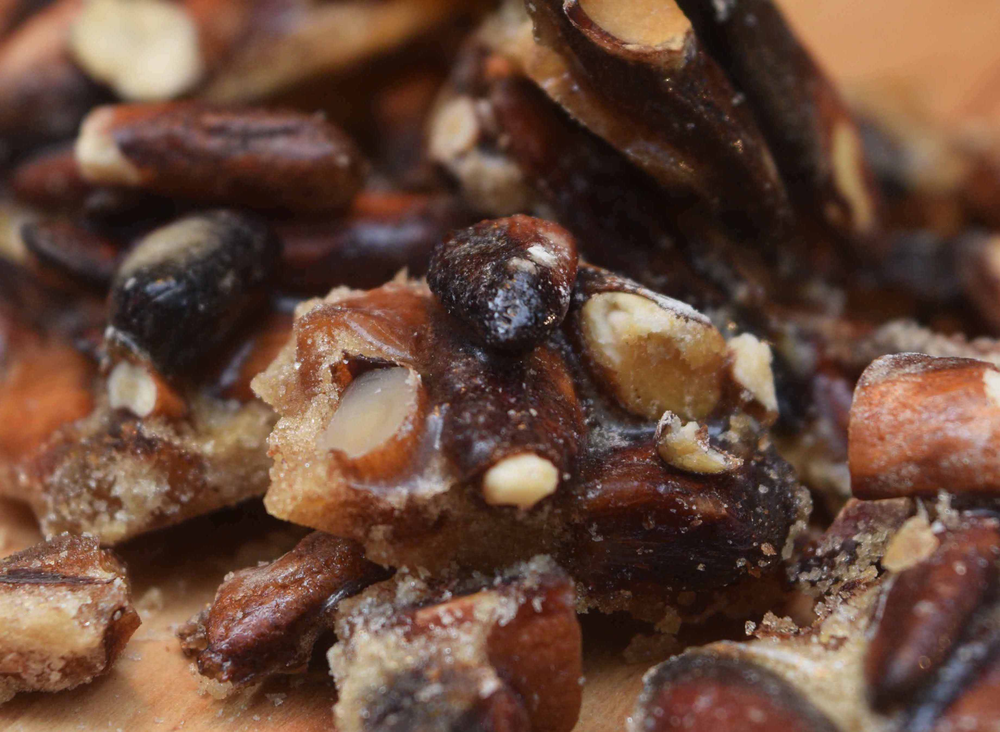

Pilon
Es la versión criolla de las paletas
Deliciosamente simple

Coco
Compuesto por solo dos ingredientes, leche de coco y azúcar crema
nunca se ha inventado un dulce tan básico y delicioso.
Maní
Dulce tradicional en nuestro pais. Siempre nos encontramos
con vendedores ambulantes ofreciéndolos en las calles por su rico sabor.
Dulce de
leche
Nuestra sólida version del dulce de delche, se corta en forma de bloques
y ofrece múltiples variantes con coco, guayaba, piña, cajuil o naranja.

Almendra
No hay nada mejor que recolectar las almendras y luego majarlas para
hacer un simple y delicioso dulce tradicional.
Cajuil
Pariente de las cocadas y los jalaos, este esta compuesto
por melaza y cajuil,